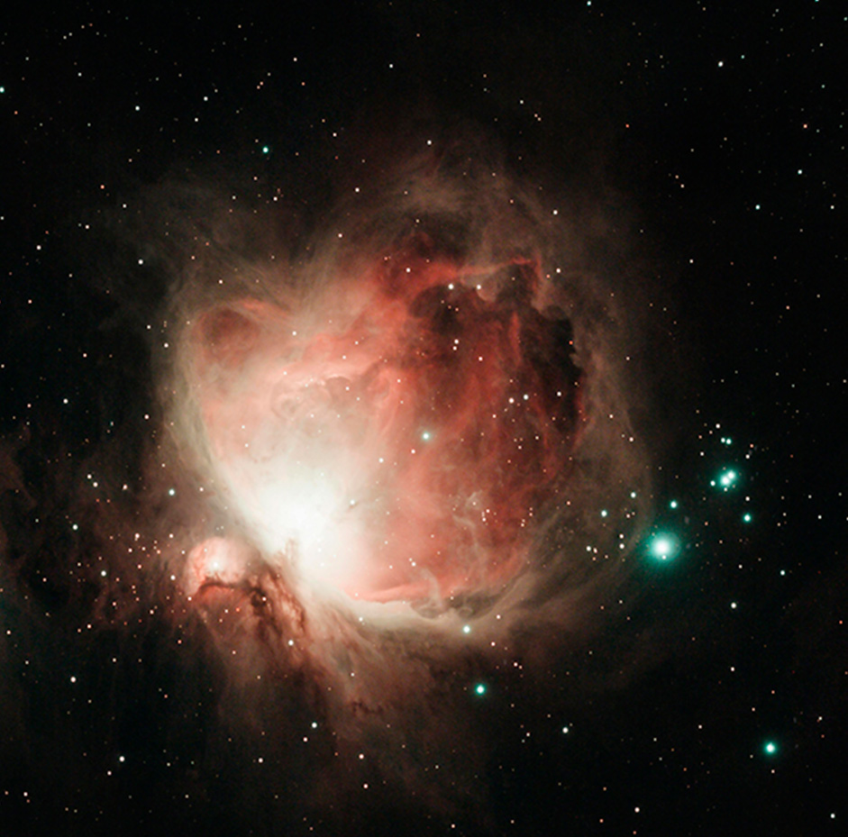
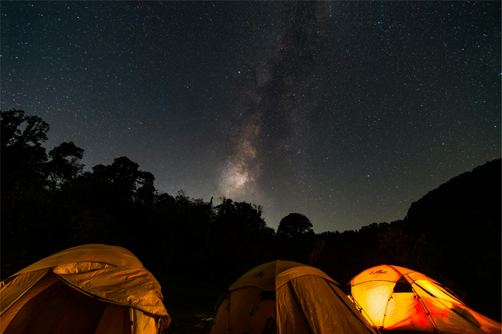
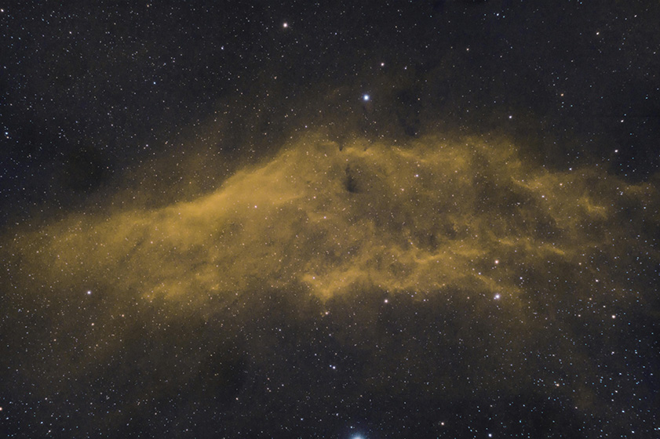

Las galachias
Descripción
Un viaje astronómico y de naturaleza bajo algunos de los cielos más oscuros de España. Dos días y
una noche.
En esta experiencia, el destino estará centrado en la observación de galaxias, estrellas y objetos
del cielo profundo mientras se disfruta de una acampada al aire libre en un entorno natural
protegido. El viaje se realizará en el Parque Nacional de Monfragüe, en Extremadura, una de
las zonas más reconocidas de España por la calidad de sus cielos nocturnos y declarada Destino
Turístico Starlight.
Durante la experiencia, los participantes aprenderán a identificar constelaciones, galaxias visibles y diferentes tipos de estrellas mediante telescopios transportados y preparados por los guías astronómicos. También se explicarán conceptos relacionados con la astronomía y la astrología antigua, las historias mitológicas asociadas al cielo y la manera en la que distintas civilizaciones interpretaban los astros.
Las actividades se desarrollarán mientras se disfruta de la experiencia de acampar en plena naturaleza, alejados de la contaminación lumínica y rodeados de un entorno tranquilo y silencioso. A lo largo de la noche, los guías realizarán explicaciones sobre la Vía Láctea, galaxias cercanas y fenómenos visibles en el cielo, combinando observación práctica con divulgación científica.
Estadía en : zona autorizada de acampada dentro del entorno natural de Monfragüe, preparada para actividades astronómicas y observación nocturna.
Precio del viaje : 95 € por persona. Incluye transporte ida y vuelta, acceso a la zona de acampada, actividades astronómicas guiadas, uso de telescopios profesionales y acompañamiento de especialistas durante toda la experiencia nocturna. La comida será llevada por los propios viajeros.
Dato destacado.
El Parque Nacional de Monfragüe está considerado uno de los mejores lugares de España para la observación astronómica gracias a sus cielos protegidos y a la escasa contaminación lumínica de la zona.
Itinerario
Día 1 - Llegada a Monfragüe y preparación de la acampada
Instalación en entorno natural protegido · 16:00 - 20:30
La experiencia comienza con el traslado hacia el Parque Nacional de Monfragüe, en Extremadura, uno de los destinos astronómicos más importantes de España y reconocido como Destino Turístico Starlight.
Tras la llegada a la zona autorizada de acampada, los viajeros prepararán el campamento en plena naturaleza, rodeados de un entorno silencioso y alejado de la contaminación lumínica. Durante la tarde, los guías realizarán una introducción sobre astronomía básica, orientación nocturna y las características del cielo de Monfragüe.

Día 1 - Noche - Observación astronómica y cielo profundo
Vía Láctea, galaxias y mitología del cielo · 21:30 - 03:00
La noche estará dedicada a la observación astronómica bajo algunos de los cielos más oscuros de España. Utilizando telescopios profesionales preparados por los especialistas, los participantes podrán contemplar galaxias visibles, cúmulos estelares, constelaciones y diferentes objetos del cielo profundo.
Durante la actividad se explicará cómo identificar estrellas y regiones de la Vía Láctea, además de descubrir historias mitológicas y antiguas interpretaciones de los astros realizadas por distintas civilizaciones. La experiencia combinará divulgación científica, naturaleza y observación práctica en un entorno único.

Día 2 - Amanecer en Monfragüe y regreso
Desmontaje de campamento y cierre de experiencia · 08:00 - 13:00
La mañana comenzará con el amanecer en plena naturaleza y tiempo libre para desayunar y disfrutar del paisaje del Parque Nacional de Monfragüe.
Posteriormente se realizará el desmontaje de la zona de acampada y una breve actividad final sobre protección de cielos oscuros y conservación astronómica. Finalmente, se efectuará el traslado de regreso, concluyendo la experiencia astronómica y de naturaleza.


Nota importante: Los programas descritos son susceptibles de cambios por razones puntuales ajenas a nuestra organización, tales como condiciones meteorológicas o de seguridad.
Observaciones
- Si alguien tiene alergia o intolerancia a algún tipo de alimento deberá comunicarlo a la agencia para prever incidentes inesperados que cundan el panico.
- Si alguien tiene algún tipo de enfermedad que afecte a la respiración, resistencia o movimiento, deberá comunicarlo a la agencia para prever una mayor seguridad y adaptación.
- Si traen menores de edad o acompañan a personas con necesidades especiales, manténganse pendientes de ellos y no se separen en ningún momento. Recuerden presentárselos a los guías e informarles de todo lo necesario que deban tener en cuenta.
- Cualquier siniestro sucedido durante el viaje o emergencia médica será responsabilidad económica de la propia persona afectada. Los costes correrán por cuenta del viajero. Se le acompañará o transportará a la zona de asistencia médica más cercana y, si es posible, el grupo continuará su recorrido.Si el viajero se recupera a tiempo para el regreso, será reincorporado al viaje. En caso de que no sea posible, deberá ponerse en contacto con sus familiares, amigos u otras personas de confianza para poder regresar a su hogar cuando esté recuperado.
Gastos de anulación según fecha de salida
| HASTA | IMPORTE |
|---|---|
| Más de dos meses de anticipación | 0% |
| Un mes de anticipación | 40% |
| Una semana de anticipación | 80% |
| El dia del viaje | 100% |
Conforme más se acerque a la fecha de salida el importe que se le quitara a su viaje sera mayor.
El precio incluye
- Alojamiento completo
- Guía especializado
- Billete de avión
- Excursiones nocturnas
El precio no incluye
- Transporte interno
- Comidas y cenas
- Seguro opcional
- Gastos personales
Preguntas frecuentes
Aprende mas sobre tu viaje, no te pierdas nada.
Sí. Cada viajero deberá llevar su propia tienda de campaña, saco de dormir y material básico de acampada. Sin embargo, los telescopios y el material astronómico serán proporcionados por los guías. Además, el instructor llevará algunos elementos comunitarios de apoyo para compartir durante la experiencia.
Sí. Aunque el viaje ya incluye telescopios profesionales para las actividades, los participantes que tengan su propio equipo astronómico pueden traerlo y utilizarlo durante la observación.
Se recomienda llevar comida sencilla y fácil de conservar, como bocadillos, fruta, snacks, frutos secos o alimentos preparados para camping. También es importante llevar suficiente agua para toda la experiencia.
Es recomendable llevar ropa cómoda y varias capas de abrigo. Aunque durante el día puede hacer calor, las temperaturas descienden bastante durante la noche en plena naturaleza.
Sí. La actividad puede realizarse con niños siempre que vayan acompañados por adultos responsables y estén acostumbrados a actividades al aire libre y nocturnas.
No. Debido a las normas de protección del Parque Nacional de Monfragüe y al riesgo de incendios, no está permitido hacer fuego ni barbacoas fuera de las zonas autorizadas.
Dependiendo de las condiciones del cielo, se podrán observar constelaciones, galaxias visibles, nebulosas, cúmulos estelares y diferentes regiones de la Vía Láctea mediante telescopios profesionales.